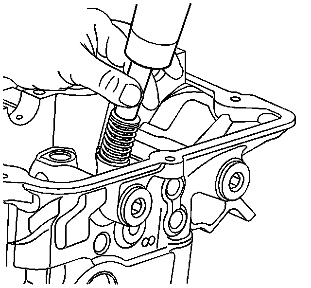
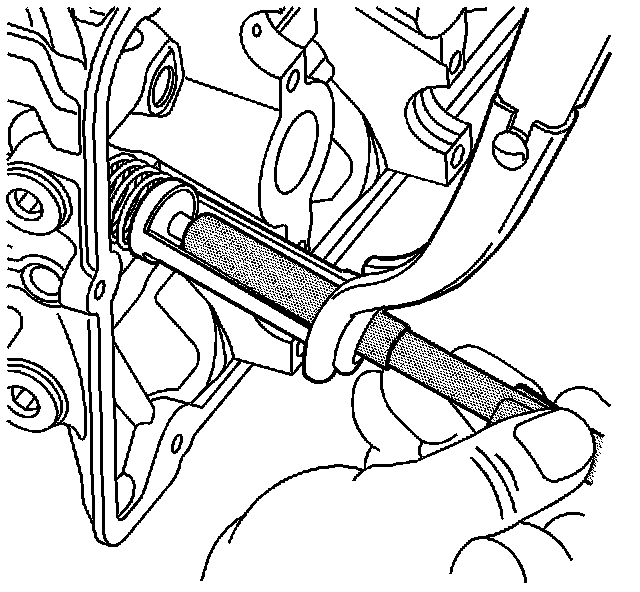
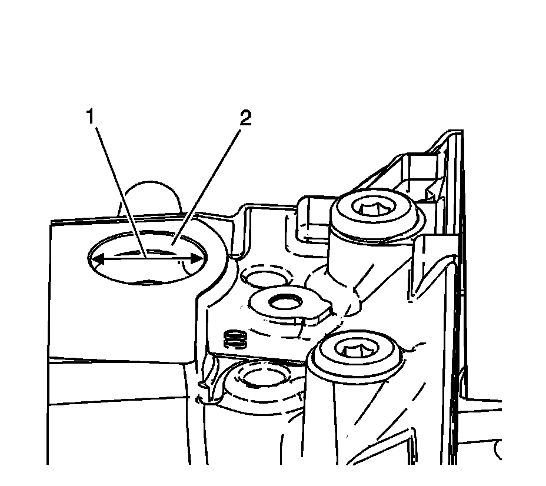
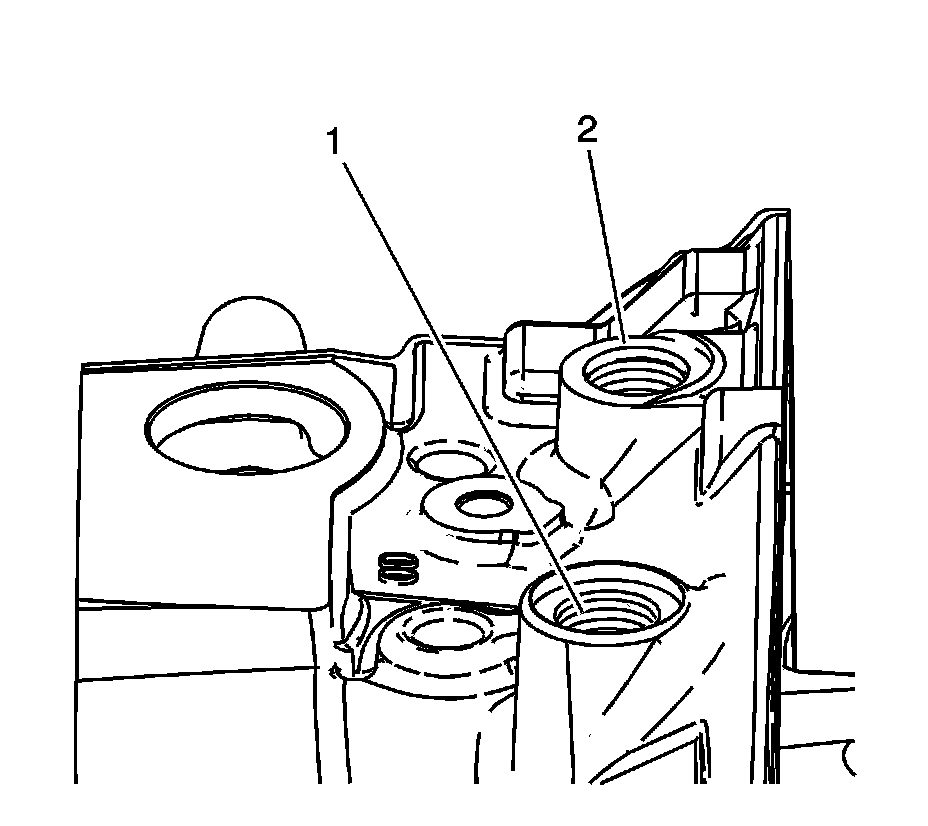
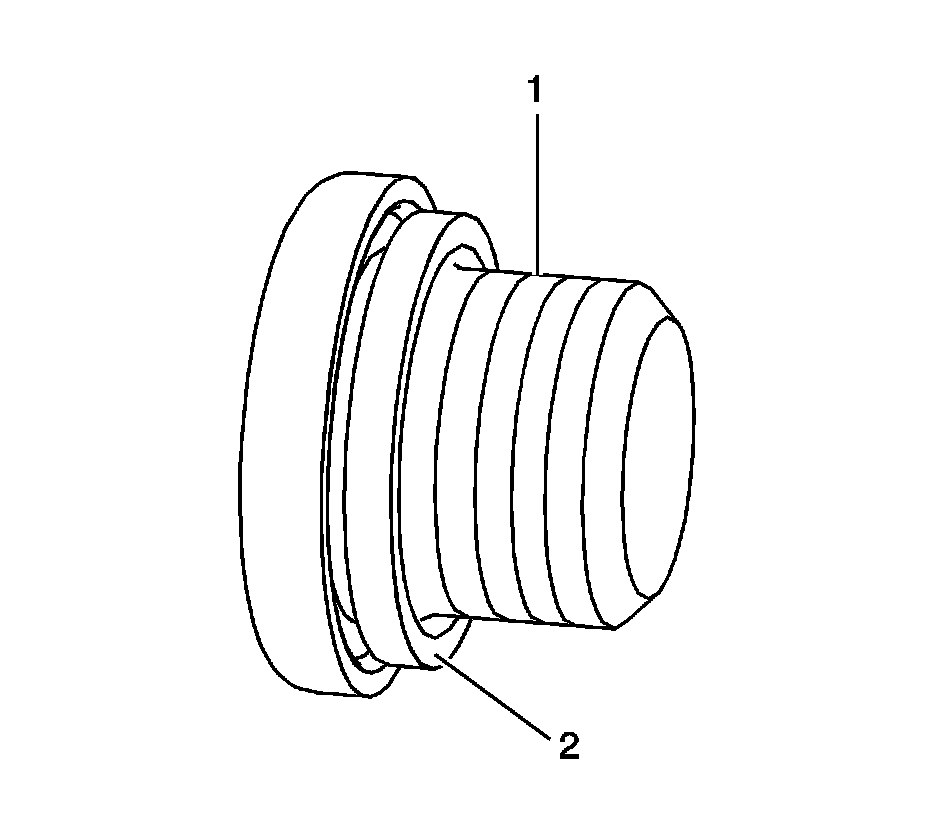
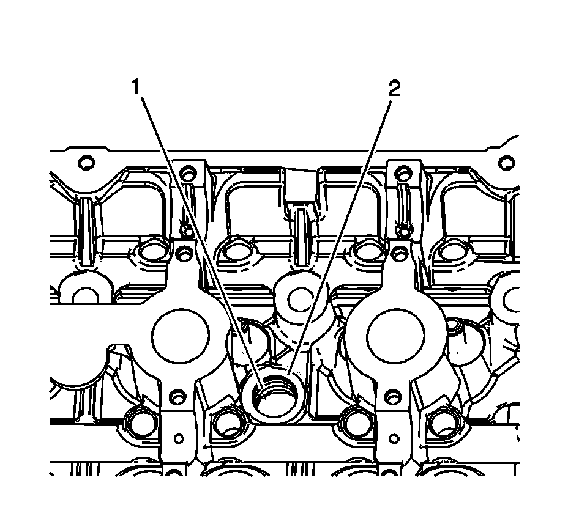
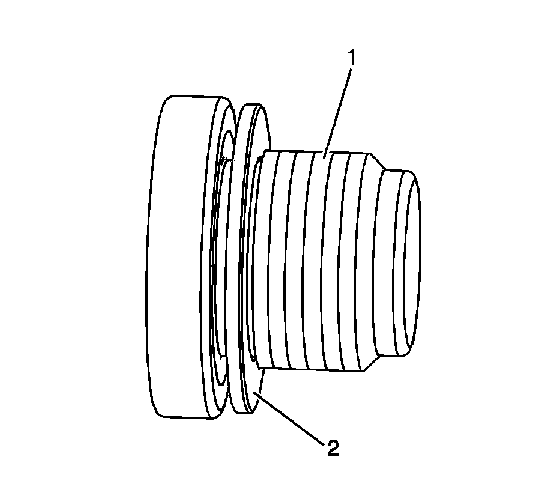

56. Cylinder Head Disassemble
Cylinder Head Disassemble
Tools Required
* J 8062 Valve Spring Compressor
* J 38820 Valve Stem Seal Installer
* J 38821 Valve Spring Compressor Adapter
* J-43059-A Valve Retainer Remover/Installer

1. Using an appropriately sized deep socket and a plastic hammer, lightly tap on the valve spring retainer in order to loosen the valve keepers.

Caution: Compressed valve springs have high tension against the valve spring compressor. Valve springs that are not properly compressed by or released from the valve spring compressor can be ejected from the valve spring compressor with intense force. Use care when compressing or releasing the valve spring with the valve spring compressor and when removing or installing the valve stem keys. Failing to use care may cause personal injury.
Notice: Do not compress the valve springs less than 24.0 mm (0.943 in). Contact between the valve spring retainer and the valve stem oil seal can cause potential valve stem oil seal damage.
2. Compress the valve spring with the J 8062 (2) and the J 38821 (1).

3. Use the magnet of the J-43059-A in order to remove the valve keepers.
4. Remove the J 8062 and the J 38821 .

5. Remove the valve spring.

6. Remove the valve seal with the J 38820 . Discard the valve seal, NEVER re-use the valve seal.
7. Remove the valve.
8. Repeat the procedure for the remaining valves.

9. Remove and discard the engine coolant expansion plugs.

10. Inspect the engine coolant expansion plug bore of the cylinder head. Ensure the hole is concentric, within specifications (1) and not damaged/corroded (2). Replace the cylinder head if necessary.

11. Remove the oil gallery threaded plugs.

12. Inspect the oil gallery threaded plug hole threads of the cylinder head. Ensure the threads (1) are serviceable and the washer sealing surface (2) is flat and free of defects. Repair the threads in the cylinder head if necessary.

13. Inspect the oil gallery threaded plugs. Ensure the threads (1) are serviceable and the washer sealing ring surface (2) is flat and free of defects. Replace the oil gallery threaded plugs if necessary.

14. Remove the core hole threaded plugs.

15. Inspect the core hole threads of the cylinder head. Ensure the threads (1) are serviceable and the washer sealing surface (2) is flat and free of defects. Repair the threads in the cylinder head if necessary.

16. Inspect the core hole threaded plugs. Ensure the threads (1) are serviceable and the washer sealing ring surface (2) is flat and free of defects. Replace the core hole threaded plugs if necessary.